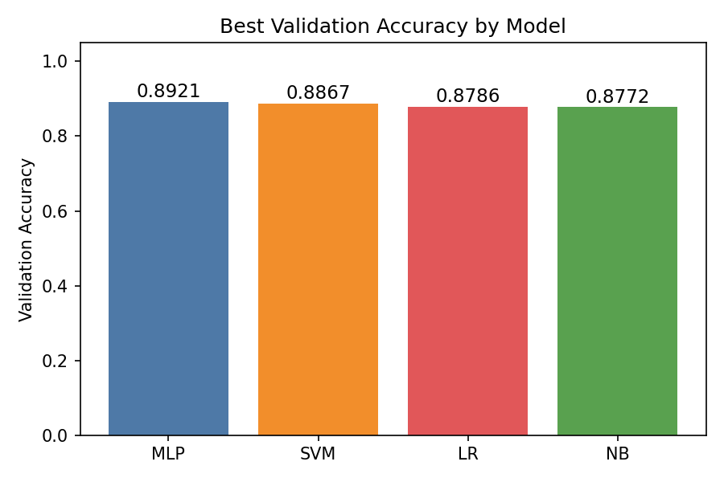

本实验对新闻组英文文本做 10 分类（训练集 7368 条，测试集 2457 条）。完整流程：数据清洗 → 8:2 分层划分验证集 → TF-IDF 特征化 → 多模型训练与调参对比 → 用最优模型预测封存测试集。全程固定 random_state=42 以保证可复现；测试集只在最后预测一次。
TfidfVectorizer(stop_words="english") 过滤。max_features=5000，sublinear_tf=True。词表与 IDF 权重只在训练集上拟合，同一规则套用到验证集与测试集，避免数据泄露。对朴素贝叶斯（NB）、线性 SVM、逻辑回归（LR）、多层感知机（MLP）共 9 组参数在同一验证集上比较：
| 模型 | 参数 | 验证集准确率 | 训练耗时 |
|---|---|---|---|
| MLP | hidden=(100,), alpha=1e-3 | 0.8921 | 111 s |
| MLP | hidden=(50,) | 0.8901 | 64 s |
| SVM | linear, C=1.0 | 0.8867 | 11 s |
| SVM | linear, C=10 | 0.8806 | 12 s |
| LR | C=1.0 | 0.8786 | 0.5 s |
| NB | alpha=0.1 | 0.8772 | <0.1 s |
| NB | alpha=1.0 | 0.8738 | <0.1 s |
| LR | C=0.1 | 0.8548 | 0.2 s |
| SVM | linear, C=0.1 | 0.8148 | 17 s |

1. 为什么 SVM 和逻辑回归在该数据集上表现好？ TF-IDF 把文本映射到 5000 维稀疏向量空间，新闻类别的区分词明显、类别近似线性可分；线性 SVM/LR 直接在高维稀疏空间求最大间隔/线性决策面，无需非线性核映射，因此既快又稳，且天然避免了高维下的核函数计算开销。
2. MLP 能否继续提升？ 加宽（hidden=(200,)）或加深（(100,50)）通常能再涨一点，但参数增多会增大方差，需配合更大的 alpha 正则化与早停来抑制过拟合；本实验受运行时间限制只试了单层结构，这是后续可探索方向。
注：结果可复现——所有模型固定 random_state=42，预处理统计量仅从训练集学习；完整代码与说明见开头 GitHub 仓库。